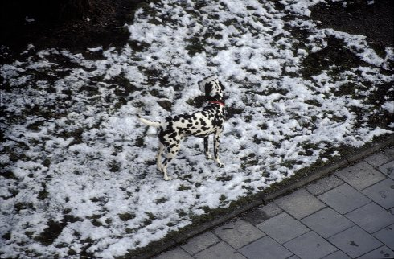

The Thrownness Of The Stones

Herbert Fell
|
DE 2018 K: Herbert Fell – S: Susanne Quester – T: Berthold Kröker – P: Marius Pfannenstiel
|
Tuesday 16 oct 8.30 pm werkstattkino
From the dental milling tool across the ideal photograph to the flashing beer mug. Out of the Rotterdam Meuse-Tunnel and into the fish tank with the woman inside. In addition the stomping of the hydraulic ram, the panting of the Magnus organ and the happy tune of the brown eyed girl. This film immerses into the world of German artist Marius Pfannenstiel.
| Herbert Fell Studied at the HFF Munich. Since the 1980s numerous portraits of artists and directors.
|
| Filme Kaffee, der schwebt 1986 – Piero Tosi Kostüme 1988 – Ich bin ein kleiner Klassiker 1992 – Die Geworfenheit der Steine 2018
|